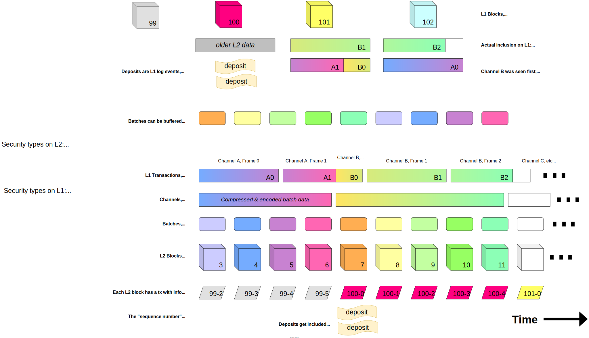

L2 Chain Derivation Specification
Table of Contents
- Overview
- Batch Submission
- Architecture
- Deriving Payload Attributes
Overview
Note the following assumes a single sequencer and batcher. In the future, the design will be adapted to accommodate multiple such entities.
L2 chain derivation — deriving L2 blocks from L1 data — is one of the main responsibilities of the rollup node, both in validator mode, and in sequencer mode (where derivation acts as a sanity check on sequencing, and enables detecting L1 chain re-organizations).
The L2 chain is derived from the L1 chain. In particular, each L1 block following L2 chain inception is mapped to a sequencing epoch comprising at least one L2 block. Each L2 block belongs to exactly one epoch, and we call the corresponding L1 block its L1 origin. The epoch's number equals that of its L1 origin block.
To derive the L2 blocks of epoch number E, we need the following inputs:
- L1 blocks in the range
[E, E + SWS), called the sequencing window of the epoch, andSWSthe sequencing window size. (Note that sequencing windows overlap.) - Batcher transactions from blocks in the sequencing window.
- These transactions allow us to reconstruct the epoch's sequencer batches, each of
which will produce one L2 block. Note that:
- The L1 origin will never contain any data needed to construct sequencer batches since each batch must contain the L1 origin hash.
- An epoch may have no sequencer batches.
- These transactions allow us to reconstruct the epoch's sequencer batches, each of
which will produce one L2 block. Note that:
- Deposits made in the L1 origin (in the form of events emitted by the deposit contract).
- L1 block attributes from the L1 origin (to derive the L1 attributes deposited transaction).
- The state of the L2 chain after the last L2 block of the previous epoch, or the L2 genesis state
if
Eis the first epoch.
To derive the whole L2 chain from scratch, we start with the L2 genesis state and the L2 genesis block as the first L2 block. We then derive L2 blocks from each epoch in order, starting at the first L1 block following L2 chain inception. Refer to the Architecture section for more information on how we implement this in practice. The L2 chain may contain pre-Bedrock history, but the L2 genesis here refers to the Bedrock L2 genesis block.
Each L2 block with origin l1_origin is subject to the following constraints (whose values are
denominated in seconds):
-
block.timestamp = prev_l2_timestamp + l2_block_timeprev_l2_timestampis the timestamp of the L2 block immediately preceding this one. If there is no preceding block, then this is the genesis block, and its timestamp is explicitly specified.l2_block_timeis a configurable parameter of the time between L2 blocks (2s on Optimism).
-
l1_origin.timestamp <= block.timestamp <= max_l2_timestamp, wheremax_l2_timestamp = max(l1_origin.timestamp + max_sequencer_drift, prev_l2_timestamp + l2_block_time)max_sequencer_driftis a configurable parameter that bounds how far the sequencer can get ahead of the L1.
Finally, each epoch must have at least one L2 block.
The first constraint means there must be an L2 block every l2_block_time seconds following L2
chain inception.
The second constraint ensures that an L2 block timestamp never precedes its L1 origin timestamp,
and is never more than max_sequencer_drift ahead of it, except only in the unusual case where it
might prohibit an L2 block from being produced every l2_block_time seconds. (Such cases might arise
for example under a proof-of-work L1 that sees a period of rapid L1 block production.) In either
case, the sequencer enforces len(batch.transactions) == 0 while max_sequencer_drift is
exceeded. See Batch Queue for more details.
The final requirement that each epoch must have at least one L2 block ensures that all relevant information from the L1 (e.g. deposits) is represented in the L2, even if it has no sequencer batches.
Post-merge, Ethereum has a fixed 12s block time, though some slots can be
skipped. Under a 2s L2 block time, we thus expect each epoch to typically contain 12/2 = 6 L2
blocks. The sequencer will however produce bigger epochs in order to maintain liveness in case of
either a skipped slot on the L1 or a temporary loss of connection to it. For the lost connection
case, smaller epochs might be produced after the connection was restored to keep L2 timestamps from
drifting further and further ahead.
Eager Block Derivation
Deriving an L2 block requires that we have constructed its sequencer batch and derived all L2 blocks and state updates prior to it. This means we can typically derive the L2 blocks of an epoch eagerly without waiting on the full sequencing window. The full sequencing window is required before derivation only in the very worst case where some portion of the sequencer batch for the first block of the epoch appears in the very last L1 block of the window. Note that this only applies to block derivation. Sequencer batches can still be derived and tentatively queued without deriving blocks from them.
Batch Submission
Sequencing & Batch Submission Overview
The sequencer accepts L2 transactions from users. It is responsible for building blocks out of these. For each such block, it also creates a corresponding sequencer batch. It is also responsible for submitting each batch to a data availability provider (e.g. Ethereum calldata), which it does via its batcher component.
The difference between an L2 block and a batch is subtle but important: the block includes an L2 state root, whereas the batch only commits to transactions at a given L2 timestamp (equivalently: L2 block number). A block also includes a reference to the previous block (*).
(*) This matters in some edge case where a L1 reorg would occur and a batch would be reposted to the L1 chain but not the preceding batch, whereas the predecessor of an L2 block cannot possibly change.
This means that even if the sequencer applies a state transition incorrectly, the transactions in the batch will still be considered part of the canonical L2 chain. Batches are still subject to validity checks (i.e. they have to be encoded correctly), and so are individual transactions within the batch (e.g. signatures have to be valid). Invalid batches and invalid individual transactions within an otherwise valid batch are discarded by correct nodes.
If the sequencer applies a state transition incorrectly and posts an output root, then this output root will be incorrect. The incorrect output root which will be challenged by a fault proof, then replaced by a correct output root for the existing sequencer batches.
Refer to the Batch Submission specification for more information.
Batch Submission Wire Format
Batch submission is closely tied to L2 chain derivation because the derivation process must decode the batches that have been encoded for the purpose of batch submission.
The batcher submits batcher transactions to a data availability provider. These transactions contain one or multiple channel frames, which are chunks of data belonging to a channel.
A channel is a sequence of sequencer batches (for any L2 blocks) compressed together. The reason to group multiple batches together is simply to obtain a better compression rate, hence reducing data availability costs.
Channels might be too large to fit in a single batcher transaction, hence we need to split it into chunks known as channel frames. A single batcher transaction can also carry multiple frames (belonging to the same or to different channels).
This design gives use the maximum flexibility in how we aggregate batches into channels, and split channels over batcher transactions. It notably allows us to maximize data utilisation in a batcher transaction: for instance it allows us to pack the final (small) frame of a window with large frames from the next window.
In the future this channel identification feature also allows the batcher to employ multiple signers (private keys) to submit one or multiple channels in parallel (1).
(1) This helps alleviate issues where, because of transaction nonce values affecting the L2 tx-pool and thus inclusion: multiple transactions made by the same signer are stuck waiting on the inclusion of a previous transaction.
Also note that we use a streaming compression scheme, and we do not need to know how many blocks a channel will end up containing when we start a channel, or even as we send the first frames in the channel.
And by splitting channels across multiple data transactions, the L2 can have larger block data than the data-availability layer may support.
All of this is illustrated in the following diagram. Explanations below.

The first line represents L1 blocks with their numbers. The boxes under the L1 blocks represent batcher transactions included within the block. The squiggles under the L1 blocks represent deposits (more specifically, events emitted by the deposit contract).
Each colored chunk within the boxes represents a channel frame. So A and B are
channels whereas A0, A1, B0, B1, B2 are frames. Notice that:
- multiple channels are interleaved
- frames do not need to be transmitted in order
- a single batcher transaction can carry frames from multiple channels
In the next line, the rounded boxes represent individual sequencer batches that were extracted from
the channels. The four blue/purple/pink were derived from channel A while the other were derived from channel B.
These batches are here represented in the order they were decoded from batches (in this case B is decoded first).
Note The caption here says "Channel B was seen first and will be decoded into batches first", but this is not a requirement. For instance, it would be equally acceptable for an implementation to peek into the channels and decode the one that contains the oldest batches first.
The rest of the diagram is conceptually distinct from the first part and illustrates L2 chain derivation after the channels have been reordered.
The first line shows batcher transactions. Note that in this case, there exists an ordering of the batches that makes
all frames within the channels appear contiguously. This is not true in general. For instance, in the second
transaction, the position of A1 and B0 could have been inverted for exactly the same result — no changes needed in
the rest of the diagram.
The second line shows the reconstructed channels in proper order. The third line shows the batches extracted from the channel. Because the channels are ordered and the batches within a channel are sequential, this means the batches are ordered too. The fourth line shows the L2 block derived from each batch. Note that we have a 1-1 batch to block mapping here but, as we'll see later, empty blocks that do not map to batches can be inserted in cases where there are "gaps" in the batches posted on L1.
The fifth line shows the L1 attributes deposited transaction which, within each L2 block, records information about the L1 block that matches the L2 block's epoch. The first number denotes the epoch/L1x number, while the second number (the "sequence number") denotes the position within the epoch.
Finally, the sixth line shows user-deposited transactions derived from the deposit contract event mentioned earlier.
Note the 101-0 L1 attributes transaction on the bottom right of the diagram. Its presence there is only possible if
frame B2 indicates that it is the last frame within the channel and (2) no empty blocks must be inserted.
The diagram does not specify the sequencing window size in use, but from this we can infer that it must be at least 4
blocks, because the last frame of channel A appears in block 102, but belong to epoch 99.
As for the comment on "security types", it explains the classification of blocks as used on L1 and L2.
- Unsafe L2 blocks:
- Safe L2 blocks:
- Finalized L2 blocks: refer to block that have been derived from finalized L1 data.
These security levels map to the headBlockHash, safeBlockHash and finalizedBlockHash values transmitted when
interacting with the execution-engine API.
Batcher Transaction Format
Batcher transactions are encoded as version_byte ++ rollup_payload (where ++ denotes concatenation).
version_byte | rollup_payload |
|---|---|
| 0 | frame ... (one or more frames, concatenated) |
Unknown versions make the batcher transaction invalid (it must be ignored by the rollup node). All frames in a batcher transaction must be parseable. If any one frame fails to parse, the all frames in the transaction are rejected.
Batch transactions are authenticated by verifying that the to address of the transaction matches the batch inbox
address, and the from address matches the batch-sender address in the system configuration at the
time of the L1 block that the transaction data is read from.
Frame Format
A channel frame is encoded as:
frame = channel_id ++ frame_number ++ frame_data_length ++ frame_data ++ is_last
channel_id = bytes16
frame_number = uint16
frame_data_length = uint32
frame_data = bytes
is_last = bool
Where uint32 and uint16 are all big-endian unsigned integers. Type names should be interpreted to and
encoded according to the Solidity ABI.
All data in a frame is fixed-size, except the frame_data. The fixed overhead is 16 + 2 + 4 + 1 = 23 bytes.
Fixed-size frame metadata avoids a circular dependency with the target total data length,
to simplify packing of frames with varying content length.
where:
channel_idis an opaque identifier for the channel. It should not be reused and is suggested to be random; however, outside of timeout rules, it is not checked for validityframe_numberidentifies the index of the frame within the channelframe_data_lengthis the length offrame_datain bytes. It is capped to 1,000,000 bytes.frame_datais a sequence of bytes belonging to the channel, logically after the bytes from the previous framesis_lastis a single byte with a value of 1 if the frame is the last in the channel, 0 if there are frames in the channel. Any other value makes the frame invalid (it must be ignored by the rollup node).
Channel Format
A channel is encoded as channel_encoding, defined as:
rlp_batches = []
for batch in batches:
rlp_batches.append(batch)
channel_encoding = compress(rlp_batches)
where:
batchesis the input, a sequence of batches byte-encoded as per the next section ("Batch Encoding")rlp_batchesis the concatenation of the RLP-encoded batchescompressis a function performing compression, using the ZLIB algorithm (as specified in RFC-1950) with no dictionarychannel_encodingis the compressed version ofrlp_batches
When decompressing a channel, we limit the amount of decompressed data to MAX_RLP_BYTES_PER_CHANNEL (currently
10,000,000 bytes), in order to avoid "zip-bomb" types of attack (where a small compressed input decompresses to a
humongous amount of data). If the decompressed data exceeds the limit, things proceeds as though the channel contained
only the first MAX_RLP_BYTES_PER_CHANNEL decompressed bytes. The limit is set on RLP decoding, so all batches that
can be decoded in MAX_RLP_BYTES_PER_CHANNEL will be accepted even if the size of the channel is greater than
MAX_RLP_BYTES_PER_CHANNEL. The exact requirement is that length(input) <= MAX_RLP_BYTES_PER_CHANNEL.
While the above pseudocode implies that all batches are known in advance, it is possible to perform streaming compression and decompression of RLP-encoded batches. This means it is possible to start including channel frames in a batcher transaction before we know how many batches (and how many frames) the channel will contain.
Batch Format
Recall that a batch contains a list of transactions to be included in a specific L2 block.
A batch is encoded as batch_version ++ content, where content depends on the batch_version:
batch_version | content |
|---|---|
| 0 | rlp_encode([parent_hash, epoch_number, epoch_hash, timestamp, transaction_list]) |
where:
batch_versionis a single byte, prefixed before the RLP contents, alike to transaction typing.rlp_encodeis a function that encodes a batch according to the RLP format, and[x, y, z]denotes a list containing itemsx,yandzparent_hashis the block hash of the previous L2 blockepoch_numberandepoch_hashare the number and hash of the L1 block corresponding to the sequencing epoch of the L2 blocktimestampis the timestamp of the L2 blocktransaction_listis an RLP-encoded list of EIP-2718 encoded transactions.
Unknown versions make the batch invalid (it must be ignored by the rollup node), as do malformed contents.
The epoch_number and the timestamp must also respect the constraints listed in the Batch Queue
section, otherwise the batch is considered invalid and will be ignored.
Architecture
The above primarily describes the general encodings used in L2 chain derivation, primarily how batches are encoded within batcher transactions.
This section describes how the L2 chain is produced from the L1 batches using a pipeline architecture.
A verifier may implement this differently, but must be semantically equivalent to not diverge from the L2 chain.
L2 Chain Derivation Pipeline
Our architecture decomposes the derivation process into a pipeline made up of the following stages:
- L1 Traversal
- L1 Retrieval
- Frame Queue
- Channel Bank
- Channel Reader (Batch Decoding)
- Batch Queue
- Payload Attributes Derivation
- Engine Queue
The data flows from the start (outer) of the pipeline towards the end (inner). From the innermost stage the data is pulled from the outermost stage.
However, data is processed in reverse order. Meaning that if there is any data to be processed in the last stage, it will be processed first. Processing proceeds in "steps" that can be taken at each stage. We try to take as many steps as possible in the last (most inner) stage before taking any steps in its outer stage, etc.
This ensures that we use the data we already have before pulling more data and minimizes the latency of data traversing the derivation pipeline.
Each stage can maintain its own inner state as necessary. In particular, each stage maintains a L1 block reference (number + hash) to the latest L1 block such that all data originating from previous blocks has been fully processed, and the data from that block is being or has been processed. This allows the innermost stage to account for finalization of the L1 data-availability used to produce the L2 chain, to reflect in the L2 chain forkchoice when the L2 chain inputs become irreversible.
Let's briefly describe each stage of the pipeline.
L1 Traversal
In the L1 Traversal stage, we simply read the header of the next L1 block. In normal operations, these will be new L1 blocks as they get created, though we can also read old blocks while syncing, or in case of an L1 re-org.
Upon traversal of the L1 block, the system configuration copy used by the L1 retrieval stage is updated, such that the batch-sender authentication is always accurate to the exact L1 block that is read by the stage.
L1 Retrieval
In the L1 Retrieval stage, we read the block we get from the outer stage (L1 traversal), and extract data from its batcher transactions. A batcher transaction is one with the following properties:
-
The
tofield is equal to the configured batcher inbox address. -
The sender, as recovered from the transaction signature (
v,r, ands), is the batcher address loaded from the system config matching the L1 block of the data.
Each batcher transaction is versioned and contains a series of channel frames to be read by the Frame Queue, see Batch Submission Wire Format. Each batcher transaction in the block is processed in the order they appear in the block by passing its calldata on to the next phase.
Ecotone: Blob Retrieval
With the Ecotone upgrade the retrieval stage is extended to support an additional DA source:
EIP-4844 blobs. After the Ecotone upgrade we modify the iteration over batcher transactions to
treat transactions of transaction-type == 0x03 (BLOB_TX_TYPE) differently. If the batcher
transaction is a blob transaction, then its calldata MUST be ignored should it be present. Instead:
- For each blob hash in
blob_versioned_hashes, retrieve the blob that matches it. A blob may be retrieved from any of a number different sources. Retrieval from a local beacon-node, through the/eth/v1/beacon/blob_sidecars/endpoint, withindicesfilter to skip unrelated blobs, is recommended. For each retrieved blob:- The blob SHOULD (MUST, if the source is untrusted) be cryptographically verified against its versioned hash.
- If the blob has a valid encoding, decode it into its continuous byte-string and pass that on to the next phase. Otherwise the blob is ignored.
Note that batcher transactions of type blob must be processed in the same loop as other batcher transactions to preserve the invariant that batches are always processed in the order they appear in the block. We ignore calldata in blob transactions so that it may be used in the future for batch metadata or other purposes.
Blob Encoding
Each blob in a EIP-4844 transaction really consists of FIELD_ELEMENTS_PER_BLOB = 4096 field elements.
Each field element is a number in a prime field of
BLS_MODULUS = 52435875175126190479447740508185965837690552500527637822603658699938581184513.
This number does not represent a full uint256: math.log2(BLS_MODULUS) = 254.8570894...
The L1 consensus-specs
describe the encoding of this polynomial.
The field elements are encoded as big-endian integers (KZG_ENDIANNESS = big).
To save computational overhead, only 254 bits per field element are used for rollup data.
127 bytes of application-layer rollup data is encoded at a time, into 4 adjacent field elements of the blob:
# read(N): read the next N bytes from the application-layer rollup-data. The next read starts where the last stopped.
# write(V): append V (one or more bytes) to the raw blob.
bytes tailA = read(31)
byte x = read(1)
byte A = x & 0b0011_1111
write(A)
write(tailA)
bytes tailB = read(31)
byte y = read(1)
byte B = (y & 0b0000_1111) | (x & 0b1100_0000) >> 2)
write(B)
write(tailB)
bytes tailC = read(31)
byte z = read(1)
byte C = z & 0b0011_1111
write(C)
write(tailC)
bytes tailD = read(31)
byte D = ((z & 0b1100_0000) >> 2) | ((y & 0b1111_0000) >> 4)
write(D)
write(tailD)
Each written field element looks like this:
- Starts with one of the prepared 6-bit left-padded byte values, to keep the field element within valid range.
- Followed by 31 bytes of application-layer data, to fill the low 31 bytes of the field element.
The written output should look like this:
<----- element 0 -----><----- element 1 -----><----- element 2 -----><----- element 3 ----->
| byte A | tailA... || byte B | tailB... || byte C | tailC... || byte D | tailD... |
The above is repeated 1024 times, to fill all 4096 elements,
with a total of (4 * 31 + 3) * 1024 = 130048 bytes of data.
When decoding a blob, the top-most two bits of each field-element must be 0, to make the encoding/decoding bijective.
The first byte of rollup-data (second byte in first field element) is used as a version-byte.
In version 0, the next 3 bytes of data are used to encode the length of the rollup-data, as big-endian uint24.
Any trailing data, past the length delimiter, must be 0, to keep the encoding/decoding bijective.
If the length is larger than 130048 - 4, the blob is invalid.
If any of the encoding is invalid, the blob as whole must be ignored.
Frame Queue
The Frame Queue buffers one data-transaction at a time, decoded into channel frames, to be consumed by the next stage. See Batcher transaction format and Frame format specifications.
Channel Bank
The Channel Bank stage is responsible for managing buffering from the channel bank that was written to by the L1 retrieval stage. A step in the channel bank stage tries to read data from channels that are "ready".
Channels are currently fully buffered until read or dropped, streaming channels may be supported in a future version of the ChannelBank.
To bound resource usage, the Channel Bank prunes based on channel size, and times out old channels.
Channels are recorded in FIFO order in a structure called the channel queue. A channel is added to the channel queue the first time a frame belonging to the channel is seen.
Pruning
After successfully inserting a new frame, the ChannelBank is pruned:
channels are dropped in FIFO order, until total_size <= MAX_CHANNEL_BANK_SIZE, where:
total_sizeis the sum of the sizes of each channel, which is the sum of all buffered frame data of the channel, with an additional frame-overhead of200bytes per frame.MAX_CHANNEL_BANK_SIZEis a protocol constant of 100,000,000 bytes.
Timeouts
The L1 origin that the channel was opened in is tracked with the channel as channel.open_l1_block,
and determines the maximum span of L1 blocks that the channel data is retained for, before being pruned.
A channel is timed out if: current_l1_block.number > channel.open_l1_block.number + CHANNEL_TIMEOUT, where:
current_l1_blockis the L1 origin that the stage is currently traversing.CHANNEL_TIMEOUTis a rollup-configurable, expressed in number of L1 blocks.
New frames for timed-out channels are dropped instead of buffered.
Reading
Upon reading, while the first opened channel is timed-out, remove it from the channel-bank.
Prior to the Canyon network upgrade, once the first opened channel, if any, is not timed-out and is ready, then it is read and removed from the channel-bank. After the Canyon network upgrade, the entire channel bank is scanned in FIFO order (by open time) & the first ready (i.e. not timed-out) channel will be returned.
The canyon behavior will activate when frames from a L1 block whose timestamp is greater than or equal to the canyon time first enter the channel queue.
A channel is ready if:
- The channel is closed
- The channel has a contiguous sequence of frames until the closing frame
If no channel is ready, the next frame is read and ingested into the channel bank.
Loading frames
When a channel ID referenced by a frame is not already present in the Channel Bank, a new channel is opened, tagged with the current L1 block, and appended to the channel-queue.
Frame insertion conditions:
- New frames matching timed-out channels that have not yet been pruned from the channel-bank are dropped.
- Duplicate frames (by frame number) for frames that have not been pruned from the channel-bank are dropped.
- Duplicate closes (new frame
is_last == 1, but the channel has already seen a closing frame and has not yet been pruned from the channel-bank) are dropped.
If a frame is closing (is_last == 1) any existing higher-numbered frames are removed from the channel.
Note that while this allows channel IDs to be reused once they have been pruned from the channel-bank, it is recommended that batcher implementations use unique channel IDs.
Channel Reader (Batch Decoding)
In this stage, we decompress the channel we pull from the last stage, and then parse batches from the decompressed byte stream.
See Batch Format for decompression and decoding specification.
Batch Queue
During the Batch Buffering stage, we reorder batches by their timestamps. If batches are missing for some time slots and a valid batch with a higher timestamp exists, this stage also generates empty batches to fill the gaps.
Batches are pushed to the next stage whenever there is one sequential batch directly following the timestamp of the current safe L2 head (the last block that can be derived from the canonical L1 chain). The parent hash of the batch must also match the hash of the current safe L2 head.
Note that the presence of any gaps in the batches derived from L1 means that this stage will need to buffer for a whole sequencing window before it can generate empty batches (because the missing batch(es) could have data in the last L1 block of the window in the worst case).
A batch can have 4 different forms of validity:
drop: the batch is invalid, and will always be in the future, unless we reorg. It can be removed from the buffer.accept: the batch is valid and should be processed.undecided: we are lacking L1 information until we can proceed batch filtering.future: the batch may be valid, but cannot be processed yet and should be checked again later.
The batches are processed in order of the inclusion on L1: if multiple batches can be accept-ed the first is applied.
An implementation can defer future batches a later derivation step to reduce validation work.
The batches validity is derived as follows:
Definitions:
batchas defined in the Batch format section.epoch = safe_l2_head.l1_origina L1 origin coupled to the batch, with properties:number(L1 block number),hash(L1 block hash), andtimestamp(L1 block timestamp).inclusion_block_numberis the L1 block number whenbatchwas first fully derived, i.e. decoded and output by the previous stage.next_timestamp = safe_l2_head.timestamp + block_timeis the expected L2 timestamp the next batch should have, see block time information.next_epochmay not be known yet, but would be the L1 block afterepochif available.batch_originis eitherepochornext_epoch, depending on validation.
Note that processing of a batch can be deferred until batch.timestamp <= next_timestamp,
since future batches will have to be retained anyway.
Rules, in validation order:
batch.timestamp > next_timestamp->future: i.e. the batch must be ready to process.batch.timestamp < next_timestamp->drop: i.e. the batch must not be too old.batch.parent_hash != safe_l2_head.hash->drop: i.e. the parent hash must be equal to the L2 safe head block hash.batch.epoch_num + sequence_window_size < inclusion_block_number->drop: i.e. the batch must be included timely.batch.epoch_num < epoch.number->drop: i.e. the batch origin is not older than that of the L2 safe head.batch.epoch_num == epoch.number: definebatch_originasepoch.batch.epoch_num == epoch.number+1:- If
next_epochis not known ->undecided: i.e. a batch that changes the L1 origin cannot be processed until we have the L1 origin data. - If known, then define
batch_originasnext_epoch
- If
batch.epoch_num > epoch.number+1->drop: i.e. the L1 origin cannot change by more than one L1 block per L2 block.batch.epoch_hash != batch_origin.hash->drop: i.e. a batch must reference a canonical L1 origin, to prevent batches from being replayed onto unexpected L1 chains.batch.timestamp < batch_origin.time->drop: enforce the min L2 timestamp rule.batch.timestamp > batch_origin.time + max_sequencer_drift: enforce the L2 timestamp drift rule, but with exceptions to preserve above min L2 timestamp invariant:len(batch.transactions) == 0:epoch.number == batch.epoch_num: this implies the batch does not already advance the L1 origin, and must thus be checked againstnext_epoch.- If
next_epochis not known ->undecided: without the next L1 origin we cannot yet determine if time invariant could have been kept. - If
batch.timestamp >= next_epoch.time->drop: the batch could have adopted the next L1 origin without breaking theL2 time >= L1 timeinvariant.
- If
len(batch.transactions) > 0: ->drop: when exceeding the sequencer time drift, never allow the sequencer to include transactions.
batch.transactions:dropif thebatch.transactionslist contains a transaction that is invalid or derived by other means exclusively:- any transaction that is empty (zero length byte string)
- any deposited transactions (identified by the transaction type prefix byte)
If no batch can be accept-ed, and the stage has completed buffering of all batches that can fully be read from the L1
block at height epoch.number + sequence_window_size, and the next_epoch is available,
then an empty batch can be derived with the following properties:
parent_hash = safe_l2_head.hashtimestamp = next_timestamptransactionsis empty, i.e. no sequencer transactions. Deposited transactions may be added in the next stage.- If
next_timestamp < next_epoch.time: the current L1 origin is repeated, to preserve the L2 time invariant.epoch_num = epoch.numberepoch_hash = epoch.hash
- If the batch is the first batch of the epoch, that epoch is used instead of advancing the epoch to ensure that
there is at least one L2 block per epoch.
epoch_num = epoch.numberepoch_hash = epoch.hash
- Otherwise,
epoch_num = next_epoch.numberepoch_hash = next_epoch.hash
Payload Attributes Derivation
In the Payload Attributes Derivation stage, we convert the batches we get from the previous stage into instances of
the PayloadAttributes structure. Such a structure encodes the transactions that need to figure into
a block, as well as other block inputs (timestamp, fee recipient, etc). Payload attributes derivation is detailed in the
section Deriving Payload Attributes section below.
This stage maintains its own copy of the system configuration, independent of the L1 retrieval stage. The system configuration is updated with L1 log events whenever the L1 epoch referenced by the batch input changes.
Engine Queue
In the Engine Queue stage, the previously derived PayloadAttributes structures are buffered and sent to the
execution engine to be executed and converted into a proper L2 block.
The stage maintains references to three L2 blocks:
- The finalized L2 head: everything up to and including this block can be fully derived from the finalized (i.e. canonical and forever irreversible) part of the L1 chain.
- The safe L2 head: everything up to and including this block can be fully derived from the currently canonical L1 chain.
- The unsafe L2 head: blocks between the safe and unsafe heads are unsafe blocks that have not been derived from L1. These blocks either come from sequencing (in sequencer mode) or from unsafe sync to the sequencer (in validator mode). This is also known as the "latest" head.
Additionally, it buffers a short history of references to recently processed safe L2 blocks, along with references from which L1 blocks each was derived. This history does not have to be complete, but enables later L1 finality signals to be translated into L2 finality.
Engine API usage
To interact with the engine, the execution engine API is used, with the following JSON-RPC methods:
Bedrock, Canyon, Delta: API Usage
engine_forkchoiceUpdatedV2— updates the forkchoice (i.e. the chain head) toheadBlockHashif different, and instructs the engine to start building an execution payload if the payload attributes parameter is notnull.engine_getPayloadV2— retrieves a previously requested execution payload build.engine_newPayloadV2— executes an execution payload to create a block.
Ecotone: API Usage
engine_forkchoiceUpdatedV3— updates the forkchoice (i.e. the chain head) toheadBlockHashif different, and instructs the engine to start building an execution payload if the payload attributes parameter is notnull.engine_getPayloadV3— retrieves a previously requested execution payload build.engine_newPayloadengine_newPayloadV2— executes a Bedrock/Canyon/Delta execution payload to create a block.engine_newPayloadV3— executes an Ecotone execution payload to create a block.
The current version of op-node uses the v3 Engine API RPC methods as well as engine_newPayloadV2, due to
engine_newPayloadV3 only supporting Ecotone execution payloads. Both engine_forkchoiceUpdatedV3 and
engine_getPayloadV3 are backwards compatible with Bedrock, Canyon & Delta payloads.
Prior versions of op-node used v2 and v1 methods.
The execution payload is an object of type ExecutionPayloadV3.
The ExecutionPayload has the following requirements:
- Bedrock
- The withdrawals field MUST be nil
- The blob gas used field MUST be nil
- The blob gas limit field MUST be nil
- Canyon, Delta
- The withdrawals field MUST be non-nil
- The withdrawals field MUST be an empty list
- The blob gas used field MUST be nil
- The blob gas limit field MUST be nil
- Ecotone
- The withdrawals field MUST be non-nil
- The withdrawals field MUST be an empty list
- The blob gas used field MUST be 0
- The blob gas limit field MUST be 0
Forkchoice synchronization
If there are any forkchoice updates to be applied, before additional inputs are derived or processed, then these are applied to the engine first.
This synchronization may happen when:
- A L1 finality signal finalizes one or more L2 blocks: updating the "finalized" L2 block.
- A successful consolidation of unsafe L2 blocks: updating the "safe" L2 block.
- The first thing after a derivation pipeline reset, to ensure a consistent execution engine forkchoice state.
The new forkchoice state is applied by calling fork choice updated on the engine API. On forkchoice-state validity errors the derivation pipeline must be reset to recover to consistent state.
L1-consolidation: payload attributes matching
If the unsafe head is ahead of the safe head, then consolidation is attempted, verifying that existing unsafe L2 chain matches the derived L2 inputs as derived from the canonical L1 data.
During consolidation, we consider the oldest unsafe L2 block, i.e. the unsafe L2 block directly after the safe head. If the payload attributes match this oldest unsafe L2 block, then that block can be considered "safe" and becomes the new safe head.
The following fields of the derived L2 payload attributes are checked for equality with the L2 block:
- Bedrock, Canyon, Delta, Ecotone Blocks
parent_hashtimestamprandaofee_recipienttransactions_list(first length, then equality of each of the encoded transactions, including deposits)gas_limit
- Canyon, Delta, Ecotone Blocks
withdrawals(first presence, then length, then equality of each of the encoded withdrawals)
- Ecotone Blocks
parent_beacon_block_root
If consolidation succeeds, the forkchoice change will synchronize as described in the section above.
If consolidation fails, the L2 payload attributes will be processed immediately as described in the section below. The payload attributes are chosen in favor of the previous unsafe L2 block, creating an L2 chain reorg on top of the current safe block. Immediately processing the new alternative attributes enables execution engines like go-ethereum to enact the change, as linear rewinds of the tip of the chain may not be supported.
L1-sync: payload attributes processing
If the safe and unsafe L2 heads are identical (whether because of failed consolidation or not), we send the L2 payload attributes to the execution engine to be constructed into a proper L2 block. This L2 block will then become both the new L2 safe and unsafe head.
If a payload attributes created from a batch cannot be inserted into the chain because of a validation error (i.e. there was an invalid transaction or state transition in the block) the batch should be dropped & the safe head should not be advanced. The engine queue will attempt to use the next batch for that timestamp from the batch queue. If no valid batch is found, the rollup node will create a deposit only batch which should always pass validation because deposits are always valid.
Interaction with the execution engine via the execution engine API is detailed in the Communication with the Execution Engine section.
The payload attributes are then processed with a sequence of:
- Engine: Fork choice updated with current forkchoice state of the stage, and the attributes to
start block building.
- Non-deterministic sources, like the tx-pool, must be disabled to reconstruct the expected block.
- Engine: Get Payload to retrieve the payload, by the payload-ID in the result of the previous step.
- Engine: New Payload to import the new payload into the execution engine.
- Engine: Fork Choice Updated to make the new payload canonical,
now with a change of both
safeandunsafefields to refer to the payload, and no payload attributes.
Engine API Error handling:
- On RPC-type errors the payload attributes processing should be re-attempted in a future step.
- On payload processing errors the attributes must be dropped, and the forkchoice state must be left unchanged.
- Eventually the derivation pipeline will produce alternative payload attributes, with or without batches.
- If the payload attributes only contained deposits, then it is a critical derivation error if these are invalid.
- On forkchoice-state validity errors the derivation pipeline must be reset to recover to consistent state.
Processing unsafe payload attributes
If no forkchoice updates or L1 data remain to be processed, and if the next possible L2 block is already available through an unsafe source such as the sequencer publishing it via the p2p network, then it is optimistically processed as an "unsafe" block. This reduces later derivation work to just consolidation with L1 in the happy case, and enables the user to see the head of the L2 chain faster than the L1 may confirm the L2 batches.
To process unsafe payloads, the payload must:
- Have a block number higher than the current safe L2 head.
- The safe L2 head may only be reorged out due to L1 reorgs.
- Have a parent blockhash that matches the current unsafe L2 head.
- This prevents the execution engine individually syncing a larger gap in the unsafe L2 chain.
- This prevents unsafe L2 blocks from reorging other previously validated L2 blocks.
- This check may change in the future versions to adopt e.g. the L1 snap-sync protocol.
The payload is then processed with a sequence of:
- Bedrock/Canyon/Delta Payloads
engine_newPayloadV2: process the payload. It does not become canonical yet.engine_forkchoiceUpdatedV2: make the payload the canonical unsafe L2 head, and keep the safe/finalized L2 heads.
- Ecotone Payloads
engine_newPayloadV3: process the payload. It does not become canonical yet.engine_forkchoiceUpdatedV3: make the payload the canonical unsafe L2 head, and keep the safe/finalized L2 heads.
Engine API Error handling:
- On RPC-type errors the payload processing should be re-attempted in a future step.
- On payload processing errors the payload must be dropped, and not be marked as canonical.
- On forkchoice-state validity errors the derivation pipeline must be reset to recover to consistent state.
Resetting the Pipeline
It is possible to reset the pipeline, for instance if we detect an L1 reorg (reorganization). This enables the rollup node to handle L1 chain reorg events.
Resetting will recover the pipeline into a state that produces the same outputs as a full L2 derivation process, but starting from an existing L2 chain that is traversed back just enough to reconcile with the current L1 chain.
Note that this algorithm covers several important use-cases:
- Initialize the pipeline without starting from 0, e.g. when the rollup node restarts with an existing engine instance.
- Recover the pipeline if it becomes inconsistent with the execution engine chain, e.g. when the engine syncs/changes.
- Recover the pipeline when the L1 chain reorganizes, e.g. a late L1 block is orphaned, or a larger attestation failure.
- Initialize the pipeline to derive a disputed L2 block with prior L1 and L2 history inside a fault-proof program.
Handling these cases also means a node can be configured to eagerly sync L1 data with 0 confirmations, as it can undo the changes if the L1 later does recognize the data as canonical, enabling safe low-latency usage.
The Engine Queue is first reset, to determine the L1 and L2 starting points to continue derivation from. After this, the other stages are reset independent of each other.
Finding the sync starting point
To find the starting point, there are several steps, relative to the head of the chain traversing back:
- Find the current L2 forkchoice state
- If no
finalizedblock can be found, start at the Bedrock genesis block. - If no
safeblock can be found, fallback to thefinalizedblock. - The
unsafeblock should always be available and consistent with the above (it may not be in rare engine-corruption recovery cases, this is being reviewed).
- If no
- Find the first L2 block with plausible L1 reference to be the new
unsafestarting point, starting from previousunsafe, back tofinalizedand no further.- Plausible iff: the L1 origin of the L2 block is known and canonical, or unknown and has a block-number ahead of L1.
- Find the first L2 block with an L1 reference older than the sequencing window, to be the new
safestarting point, starting at the above plausibleunsafehead, back tofinalizedand no further.- If at any point the L1 origin is known but not canonical, the
unsafehead is revised to parent of the current. - The highest L2 block with known canonical L1 origin is remembered as
highest. - If at any point the L1 origin in the block is corrupt w.r.t. derivation rules, then error. Corruption includes:
- Inconsistent L1 origin block number or parent-hash with parent L1 origin
- Inconsistent L1 sequence number (always changes to
0for a L1 origin change, or increments by1if not)
- If the L1 origin of the L2 block
nis older than the L1 origin ofhighestby more than a sequence window, andn.sequence_number == 0, then the parent L2 block ofnwill be thesafestarting point.
- If at any point the L1 origin is known but not canonical, the
- The
finalizedL2 block persists as thefinalizedstarting point. - Find the first L2 block with an L1 reference older than the channel-timeout
- The L1 origin referenced by this block which we call
l2basewill be thebasefor the L2 pipeline derivation: By starting here, the stages can buffer any necessary data, while dropping incomplete derivation outputs until L1 traversal has caught up with the actual L2 safe head.
- The L1 origin referenced by this block which we call
While traversing back the L2 chain, an implementation may sanity-check that the starting point is never set too far back compared to the existing forkchoice state, to avoid an intensive reorg because of misconfiguration.
Implementers note: step 1-4 are known as FindL2Heads. Step 5 is currently part of the Engine Queue reset.
This may change to isolate the starting-point search from the bare reset logic.
Resetting derivation stages
- L1 Traversal: start at L1
baseas first block to be pulled by next stage. - L1 Retrieval: empty previous data, and fetch the
baseL1 data, or defer the fetching work to a later pipeline step. - Frame Queue: empty the queue.
- Channel Bank: empty the channel bank.
- Channel Reader: reset any batch decoding state.
- Batch Queue: empty the batch queue, use
baseas initial L1 point of reference. - Payload Attributes Derivation: empty any batch/attributes state.
- Engine Queue:
- Initialize L2 forkchoice state with syncing start point state. (
finalized/safe/unsafe) - Initialize the L1 point of reference of the stage to
base. - Require a forkchoice update as first task
- Reset any finality data
- Initialize L2 forkchoice state with syncing start point state. (
Where necessary, stages starting at base can initialize their system-config from data encoded in the l2base block.
About reorgs Post-Merge
Note that post-merge, the depth of reorgs will be bounded by the L1 finality delay (2 L1 beacon epochs, or approximately 13 minutes, unless more than 1/3 of the network consistently disagrees). New L1 blocks may be finalized every L1 beacon epoch (approximately 6.4 minutes), and depending on these finality-signals and batch-inclusion, the derived L2 chain will become irreversible as well.
Note that this form of finalization only affects inputs, and nodes can then subjectively say the chain is irreversible, by reproducing the chain from these irreversible inputs and the set protocol rules and parameters.
This is however completely unrelated to the outputs posted on L1, which require a form of proof like a fault-proof or zk-proof to finalize. Optimistic-rollup outputs like withdrawals on L1 are only labeled "finalized" after passing a week without dispute (fault proof challenge window), a name-collision with the proof-of-stake finalization.
Deriving Payload Attributes
For every L2 block derived from L1 data, we need to build payload attributes,
represented by an expanded version of the PayloadAttributesV2 object,
which includes additional transactions and noTxPool fields.
This process happens during the payloads-attributes queue ran by a verifier node, as well as during block-production ran by a sequencer node (the sequencer may enable the tx-pool usage if the transactions are batch-submitted).
Deriving the Transaction List
For each L2 block to be created by the sequencer, we start from a sequencer batch matching the target L2 block number. This could potentially be an empty auto-generated batch, if the L1 chain did not include a batch for the target L2 block number. Remember that the batch includes a sequencing epoch number, an L2 timestamp, and a transaction list.
This block is part of a sequencing epoch, whose number matches that of an L1 block (its L1 origin). This L1 block is used to derive L1 attributes and (for the first L2 block in the epoch) user deposits.
Therefore, a PayloadAttributesV2 object must include the following transactions:
- one or more deposited transactions, of two kinds:
- a single L1 attributes deposited transaction, derived from the L1 origin.
- for the first L2 block in the epoch, zero or more user-deposited transactions, derived from the receipts of the L1 origin.
- zero or more network upgrade automation transactions: special transactions to perform network upgrades.
- zero or more sequenced transactions: regular transactions signed by L2 users, included in the sequencer batch.
Transactions must appear in this order in the payload attributes.
The L1 attributes are read from the L1 block header, while deposits are read from the L1 block's receipts. Refer to the deposit contract specification for details on how deposits are encoded as log entries.
Network upgrade automation transactions
Some network upgrades require automated contract changes or deployments at specific blocks. To automate these, without adding persistent changes to the execution-layer, special transactions may be inserted as part of the derivation process.
Ecotone
The Ecotone hardfork activation block, contains the following transactions in this order:
- L1 Attributes Transaction, using the pre-Ecotone
setL1BlockValues - User deposits from L1
- Network Upgrade Transactions
- L1Block deployment
- GasPriceOracle deployment
- Update L1Block Proxy ERC-1967 Implementation Slot
- Update GasPriceOracle Proxy ERC-1967 Implementation Slot
- GasPriceOracle Enable Ecotone
- Beacon block roots contract deployment (EIP-4788)
To not modify or interrupt the system behavior around gas computation, this block will not include any sequenced
transactions by setting noTxPool: true.
L1Block Deployment
The L1Block contract is upgraded to process the new Ecotone L1-data-fee parameters and L1 blob base-fee.
A deposit transaction is derived with the following attributes:
from:0x4210000000000000000000000000000000000000to:nullmint:0value:0gasLimit:375,000data:0x60806040523480156100105...(full bytecode)sourceHash:0x877a6077205782ea15a6dc8699fa5ebcec5e0f4389f09cb8eda09488231346f8, computed with the "Upgrade-deposited" type, with `intent = "Ecotone: L1 Block Deployment"
This results in the Ecotone L1Block contract being deployed to 0x07dbe8500fc591d1852B76feE44d5a05e13097Ff, to verify:
cast compute-address --nonce=0 0x4210000000000000000000000000000000000000
Computed Address: 0x07dbe8500fc591d1852B76feE44d5a05e13097Ff
Verify sourceHash:
cast keccak $(cast concat-hex 0x0000000000000000000000000000000000000000000000000000000000000002 $(cast keccak "Ecotone: L1 Block Deployment"))
# 0x877a6077205782ea15a6dc8699fa5ebcec5e0f4389f09cb8eda09488231346f8
Verify data:
git checkout 5996d0bc1a4721f2169ba4366a014532f31ea932
pnpm clean && pnpm install && pnpm build
jq -r ".bytecode.object" packages/contracts-bedrock/forge-artifacts/L1Block.sol/L1Block.json
This transaction MUST deploy a contract with the following code hash
0xc88a313aa75dc4fbf0b6850d9f9ae41e04243b7008cf3eadb29256d4a71c1dfd.
GasPriceOracle Deployment
The GasPriceOracle contract is upgraded to support the new Ecotone L1-data-fee parameters. Post fork this contract
will use the blob base fee to compute the gas price for L1-data-fee transactions.
A deposit transaction is derived with the following attributes:
from:0x4210000000000000000000000000000000000001to:null,mint:0value:0gasLimit:1,000,000data:0x60806040523480156100...(full bytecode)sourceHash:0xa312b4510adf943510f05fcc8f15f86995a5066bd83ce11384688ae20e6ecf42computed with the "Upgrade-deposited" type, with `intent = "Ecotone: Gas Price Oracle Deployment"
This results in the Ecotone GasPriceOracle contract being deployed to 0xb528D11cC114E026F138fE568744c6D45ce6Da7A,
to verify:
cast compute-address --nonce=0 0x4210000000000000000000000000000000000001
Computed Address: 0xb528D11cC114E026F138fE568744c6D45ce6Da7A
Verify sourceHash:
❯ cast keccak $(cast concat-hex 0x0000000000000000000000000000000000000000000000000000000000000002 $(cast keccak "Ecotone: Gas Price Oracle Deployment"))
# 0xa312b4510adf943510f05fcc8f15f86995a5066bd83ce11384688ae20e6ecf42
Verify data:
git checkout 5996d0bc1a4721f2169ba4366a014532f31ea932
pnpm clean && pnpm install && pnpm build
jq -r ".bytecode.object" packages/contracts-bedrock/forge-artifacts/GasPriceOracle.sol/GasPriceOracle.json
This transaction MUST deploy a contract with the following code hash
0x8b71360ea773b4cfaf1ae6d2bd15464a4e1e2e360f786e475f63aeaed8da0ae5.
L1Block Proxy Update
This transaction updates the L1Block Proxy ERC-1967 implementation slot to point to the new L1Block deployment.
A deposit transaction is derived with the following attributes:
from:0x0000000000000000000000000000000000000000to:0x4200000000000000000000000000000000000015(L1Block Proxy)mint:0value:0gasLimit:50,000data:0x3659cfe600000000000000000000000007dbe8500fc591d1852b76fee44d5a05e13097ffsourceHash:0x18acb38c5ff1c238a7460ebc1b421fa49ec4874bdf1e0a530d234104e5e67dbccomputed with the "Upgrade-deposited" type, with `intent = "Ecotone: L1 Block Proxy Update"
Verify data:
cast concat-hex $(cast sig "upgradeTo(address)") $(cast abi-encode "upgradeTo(address)" 0x07dbe8500fc591d1852B76feE44d5a05e13097Ff)
0x3659cfe600000000000000000000000007dbe8500fc591d1852b76fee44d5a05e13097ff
Verify sourceHash:
cast keccak $(cast concat-hex 0x0000000000000000000000000000000000000000000000000000000000000002 $(cast keccak "Ecotone: L1 Block Proxy Update"))
# 0x18acb38c5ff1c238a7460ebc1b421fa49ec4874bdf1e0a530d234104e5e67dbc
GasPriceOracle Proxy Update
This transaction updates the GasPriceOracle Proxy ERC-1967 implementation slot to point to the new GasPriceOracle deployment.
A deposit transaction is derived with the following attributes:
from:0x0000000000000000000000000000000000000000to:0x420000000000000000000000000000000000000F(Gas Price Oracle Proxy)mint:0value:0gasLimit:50,000data:0x3659cfe6000000000000000000000000b528d11cc114e026f138fe568744c6d45ce6da7asourceHash:0xee4f9385eceef498af0be7ec5862229f426dec41c8d42397c7257a5117d9230acomputed with the "Upgrade-deposited" type, withintent = "Ecotone: Gas Price Oracle Proxy Update"
Verify data:
cast concat-hex $(cast sig "upgradeTo(address)") $(cast abi-encode "upgradeTo(address)" 0xb528D11cC114E026F138fE568744c6D45ce6Da7A)
0x3659cfe6000000000000000000000000b528d11cc114e026f138fe568744c6d45ce6da7a
Verify sourceHash:
cast keccak $(cast concat-hex 0x0000000000000000000000000000000000000000000000000000000000000002 $(cast keccak "Ecotone: Gas Price Oracle Proxy Update"))
# 0xee4f9385eceef498af0be7ec5862229f426dec41c8d42397c7257a5117d9230a
GasPriceOracle Enable Ecotone
This transaction informs the GasPriceOracle to start using the Ecotone gas calculation formula.
A deposit transaction is derived with the following attributes:
from:0xDeaDDEaDDeAdDeAdDEAdDEaddeAddEAdDEAd0001(Depositer Account)to:0x420000000000000000000000000000000000000F(Gas Price Oracle Proxy)mint:0value:0gasLimit:80,000data:0x22b90ab3sourceHash:0x0c1cb38e99dbc9cbfab3bb80863380b0905290b37eb3d6ab18dc01c1f3e75f93, computed with the "Upgrade-deposited" type, with `intent = "Ecotone: Gas Price Oracle Set Ecotone"
Verify data:
cast sig "setEcotone()"
0x22b90ab3
Verify sourceHash:
cast keccak $(cast concat-hex 0x0000000000000000000000000000000000000000000000000000000000000002 $(cast keccak "Ecotone: Gas Price Oracle Set Ecotone"))
# 0x0c1cb38e99dbc9cbfab3bb80863380b0905290b37eb3d6ab18dc01c1f3e75f93
Beacon block roots contract deployment (EIP-4788)
EIP-4788 introduces a "Beacon block roots" contract, that processes and exposes the beacon-block-root values.
at address BEACON_ROOTS_ADDRESS = 0x000F3df6D732807Ef1319fB7B8bB8522d0Beac02.
For deployment, EIP-4788 defines a pre-EIP-155 legacy transaction, sent from a key that is derived such that the transaction signature validity is bound to message-hash, which is bound to the input-data, containing the init-code.
However, this type of transaction requires manual deployment and gas-payments. And since the processing is an integral part of the chain processing, and has to be repeated for every OP-Stack chain, the deployment is approached differently here.
Some chains may already have a user-submitted instance of the EIP-4788 transaction. This is cryptographically guaranteed to be correct, but may result in the upgrade transaction deploying a second contract, with the next nonce. The result of this deployment can be ignored.
A Deposit transaction is derived with the following attributes:
from:0x0B799C86a49DEeb90402691F1041aa3AF2d3C875, as specified in the EIP.to: nullmint:0value:0gasLimit:0x3d090, as specified in the EIP.isCreation:truedata:0x60618060095f395ff33373fffffffffffffffffffffffffffffffffffffffe14604d57602036146024575f5ffd5b5f35801560495762001fff810690815414603c575f5ffd5b62001fff01545f5260205ff35b5f5ffd5b62001fff42064281555f359062001fff015500isSystemTx:false, as per the Regolith upgrade, even the system-generated transactions spend gas.sourceHash:0x69b763c48478b9dc2f65ada09b3d92133ec592ea715ec65ad6e7f3dc519dc00c, computed with the "Upgrade-deposited" type, withintent = "Ecotone: beacon block roots contract deployment"
The contract address upon deployment is computed as rlp([sender, nonce]), which will equal:
BEACON_ROOTS_ADDRESSif deployed- a different address (
0xE3aE1Ae551eeEda337c0BfF6C4c7cbA98dce353B) ifnonce = 1: when a user already submitted the EIP transaction before the upgrade.
Verify BEACON_ROOTS_ADDRESS:
cast compute-address --nonce=0 0x0B799C86a49DEeb90402691F1041aa3AF2d3C875
# Computed Address: 0x000F3df6D732807Ef1319fB7B8bB8522d0Beac02
Verify sourceHash:
cast keccak $(cast concat-hex 0x0000000000000000000000000000000000000000000000000000000000000002 $(cast keccak "Ecotone: beacon block roots contract deployment"))
# 0x69b763c48478b9dc2f65ada09b3d92133ec592ea715ec65ad6e7f3dc519dc00c
Building Individual Payload Attributes
After deriving the transactions list, the rollup node constructs a PayloadAttributesV2 as
follows:
timestampis set to the batch's timestamp.randomis set to theprev_randaoL1 block attribute.suggestedFeeRecipientis set to the Sequencer Fee Vault address. See Fee Vaults specification.transactionsis the array of the derived transactions: deposited transactions and sequenced transactions, all encoded with EIP-2718.noTxPoolis set totrue, to use the exact abovetransactionslist when constructing the block.gasLimitis set to the currentgasLimitvalue in the system configuration of this payload.withdrawalsis set to nil prior to Canyon and an empty array after Canyon